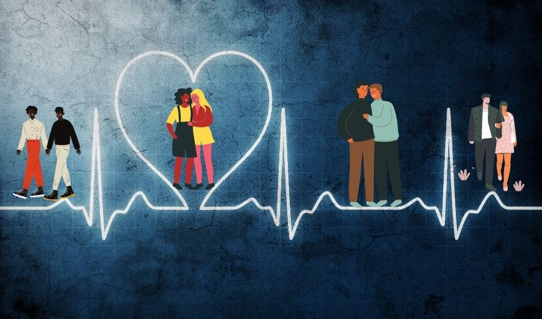
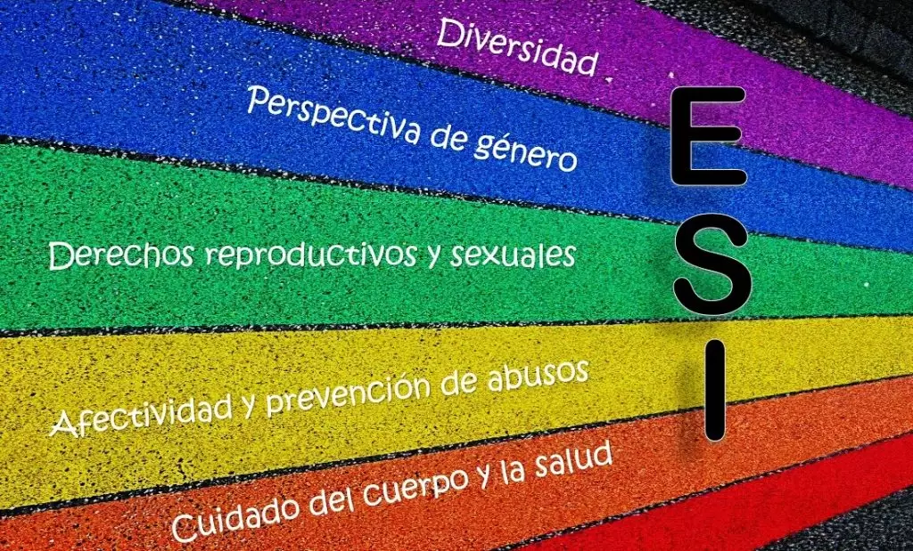
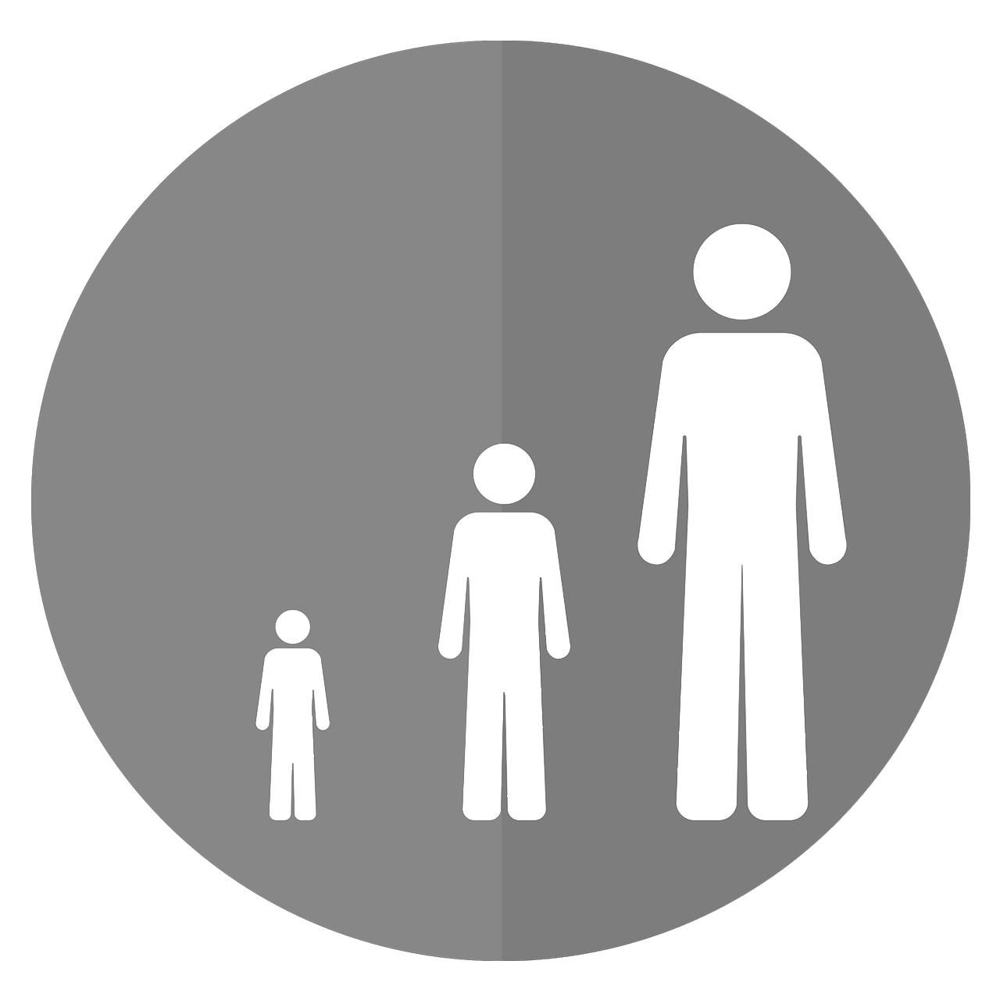

Trabajo Integrador de Salud y Adolecencia
En esta página pasaremos por los distintos temas vistos a lo largo del año. Dividimos en tres ejes principales, Salud, Adolecencia y ESI
- 

- 

Adolescencia
Es la época de la vida en la que el niño experimenta cambios físicos y hormonales que marcan la transición de niño a adulto.
Salud
La salud es un estado de completo bienestar físico, mental y social, no solamente la ausencia de enfermedad o dolencia.
ESI
La educación sexual integral es un espacio sistemático de enseñanza y aprendizaje que comprende contenidos de distintas áreas curriculares.